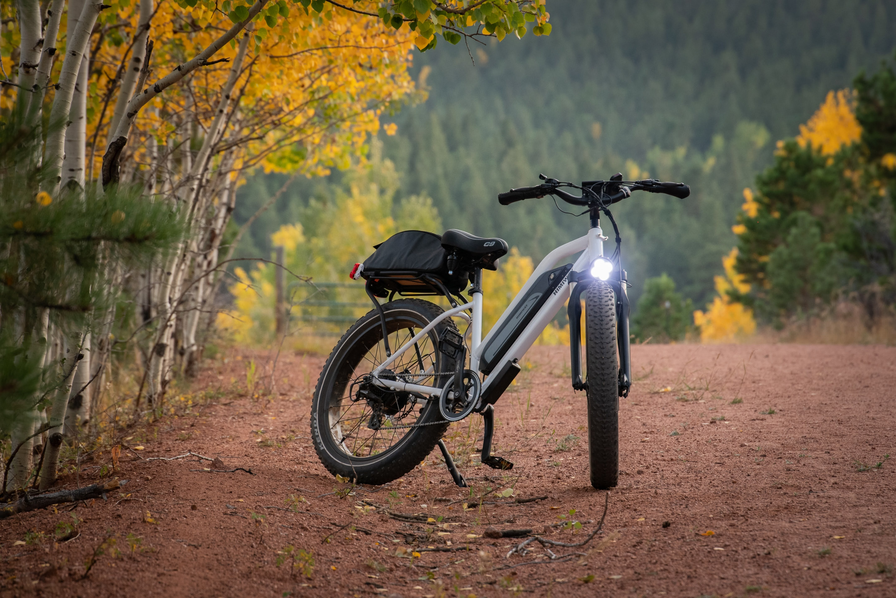

Enhance Your Safety with Bicycle Rear Lights
As cyclists, safety should always be a top priority when hitting the road, and having proper lighting on your bicycle is a crucial aspect of staying visible to drivers and pedestrians, especially during low-light conditions or at night. Among the essential safety accessories, bicycle rear lights play a vital role in ensuring your presence is noticed from behind. In this article, we explore why rear lights are essential and what to consider when choosing the right one for your bike.
As a cyclist, you should move in the direction of traffic, which means that you should be moving in the direction that other cars are moving in. Keep in mind that the back light is meant to be reflective and make you noticeable to a driver, letting them know you're there before they get close, particularly if a reflector is fastened to it. A rear light is your beacon on the road, alerting motorists and fellow cyclists to your presence. It significantly reduces the chances of accidents caused by rear-end collisions, making your ride safer.
When cycling at night, visibility is significantly reduced. A rear light helps illuminate your bike and your surroundings, allowing others to spot you from a distance and react accordingly. A driver might not see you in dark or foggy conditions, such as at night and during rainy times, and that can cause unwanted incidents. It's not safe if they can't see you. Therefore, it is as important to install rear lights on your bike.
In adverse weather conditions like rain or fog, visibility is compromised even during the day. Rear lights cut through the gloom, helping you maintain a safe distance from other road users. Asides from the fact that rear lights make you visible and increase your safety by making other road users aware of your presence, they also project the qualities of your bike, increase your confidence when riding at night and in different weather and visibility conditions, and make your bike more presentable.
Choosing the Right Rear Light
- Brightness: Look for a rear light with sufficient brightness and various modes for visibility.
- Mounting Options: Choose a mounting option that securely fits your bike and is easy to attach and remove.
- Battery Life: Consider the battery life to reduce the need for frequent charging or battery replacement.
- Water Resistance: Opt for a light with good water resistance for durability in wet conditions.
- Ease of Use: Choose a user-friendly rear light with features like one-touch operation.
- Additional Features: Some lights come with built-in reflectors or side visibility lights for enhanced safety.
Conclusion
Bicycle rear lights are not just accessories; they are essential tools that contribute significantly to your safety while cycling. Their role in improving visibility, especially in low-light conditions, cannot be overstated. When choosing a rear light, consider factors like brightness, mounting options, battery life, and water resistance. By equipping your bike with a reliable and effective rear light, you're taking a proactive step toward making your rides safer and more enjoyable.